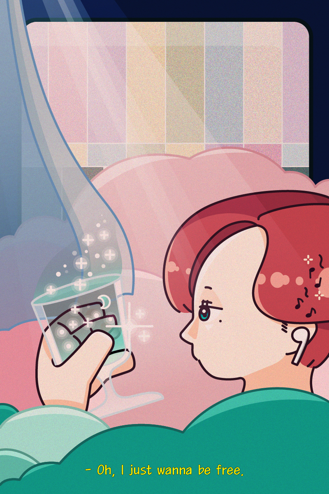

Basic Drawing
기초드로잉 중간평가作: 바쁜 일상에서 벗어나 편안하고 아늑한 순간 (2020.05)
백예린의 노래 rest를 주제로 드로잉한 작품입니다.
옛 애니 느낌을 주기 위해 전체적으로 옅은 그레인 효과를 주고 Multifly로 따뜻한 색을 입혔습니다.
창문은 TV 화면 연상케 하였으며 채널이 없음을 나타내는 TV 화면은 누구도 지켜보지 않는 편안한 공간을 의미합니다.
마지막으로 편안한 분위기 조성 내리쬐는 햇빛, 선선한 바람을 연상시키는 커튼, 주위를 감싸는 구름으로 마무리하였습니다.
About Me

2020/06/21/s/pm/13/43/40
MOoDbOaRd
Follow Me
@haveadeep
@lotusix